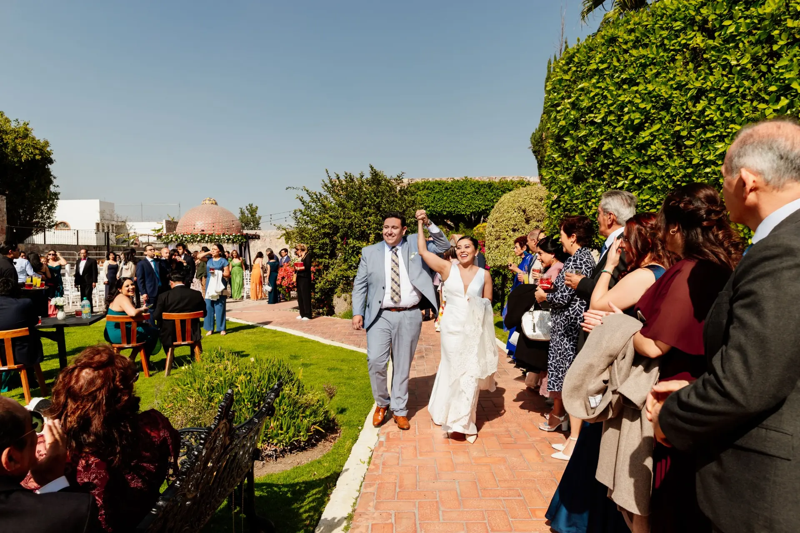

Hacienda Real Puebla
Puebla

Snapshot Fotografía
Bodas en Puebla
En Snapshot Fotografía documentamos bodas en Puebla con un estilo natural, elegante y atemporal. Trabajamos con un equipo especializado en fotografía y video para acompañarlos desde la planeación hasta la entrega final de sus recuerdos.
Después de más de 300 bodas y 13 años de experiencia, sabemos que cada celebración tiene un ritmo propio. Por eso dedicamos tiempo a conocer su historia, definir los momentos importantes y preparar una cobertura que les permita disfrutar su día con tranquilidad.
Historias reales
Celebraciones en Puebla capital, Cholula y distintas locaciones de la región.
Puebla

Hacienda Amalucan · Puebla

Catedral de Puebla · Cholula

Hotel Tila · Salón Irises

Salón Puertagua · Cholula
Cada celebración tiene una personalidad diferente. Nuestro objetivo no es hacer que todas las bodas se vean iguales, sino conservar aquello que hizo única a cada una.
Una cobertura planeada
Héctor Jiménez dirige el área de fotografía y Antonio Reyes el área de video. Trabajan acompañados por fotógrafos, operadores de cámara y editoras que siguen procesos definidos para mantener la calidad y el estilo de cada cobertura.
Conocemos su historia, la fecha, las locaciones y lo que desean conservar.
Definimos horarios, recorridos y los momentos importantes de la celebración.
Trabajamos con un plan y un equipo coordinado durante toda la cobertura.
A las dos semanas enviamos las fotografías para selección. La entrega completa tarda entre cuatro y cinco semanas.
Inversión y reservación
La fecha se reserva mediante contrato y un anticipo del 20% del paquete elegido.
Preguntas frecuentes
Según el paquete, pueden incluir fotografía, video, tomas con dron, sesiones, fotolibro y entre 7 y 10 horas de cobertura.
Enviamos las fotografías para selección dos semanas después de la boda. La entrega completa puede estar lista en cuatro semanas o hasta cinco durante temporada alta.
La fecha se reserva al firmar el contrato y cubrir el 20% del paquete. El 70% se paga dos semanas antes de la boda y el 10% restante al entregar el material.
Aceptamos efectivo, depósito o transferencia.
Disponibilidad
Compártannos la fecha, el lugar y la cobertura que están buscando. Les responderemos personalmente por WhatsApp.